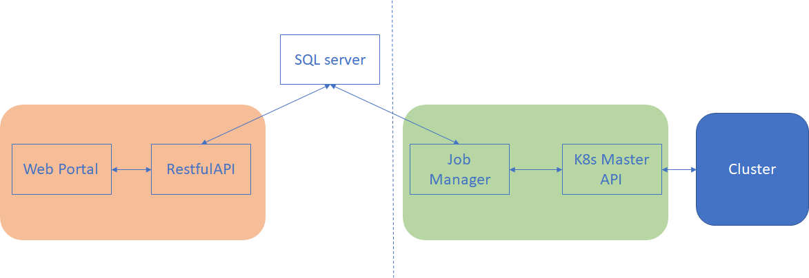

4.2: 集群原理
集群框架

- 用户交互接口（MVC模块）
- 与用户交互的前端UI：WebPortal
- 用于接收用户前端请求并和数据库进行交互的后端RestfulAPI服务
- 保存集群及各种状态信息，并且作为用户模块和任务调度模块消息传递媒介的SQL server
- 任务调度模块
- 对用户的计算任务进行调度管理的Job Manager
- 方便用户自定义扩展kuberneters功能的k8s Master Api
- 底层集群服务器：GPU、CPU、存储节点等
在本章节中，依次介绍各个子组件所负责的详细功能
部署：
集群部署的主要逻辑是： 通过src/ClusterBootstrap/deploy.py填充集群配置，使用python的jinja2模板引擎将配置内容渲染进模板(Dockerfile)，最后通过模板生成各种Docker image，通过这些Docker image提供了各种容器化的服务，包括创建、查看、结束计算job，集群状态查看等